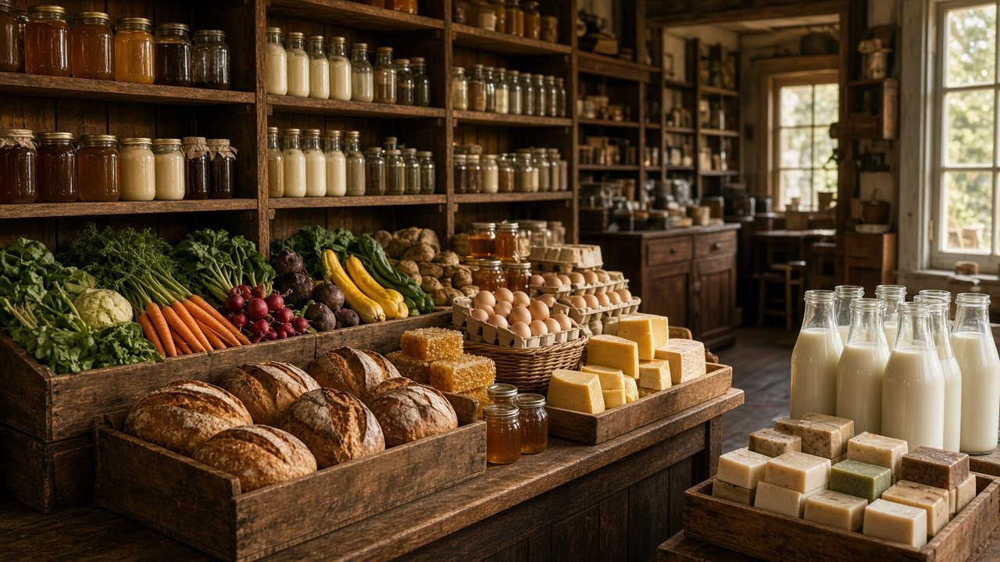

A family-owned general store selling only local food and goods, from vendors and farmers with only clean ingredients.

Sample photoEverything on the shelves comes from local vendors and farmers, chosen for clean ingredients.
— in their words, from NextdoorEvery product comes from local vendors and farmers.
Franklin General Store is a Nextdoor Neighborhood Favorite in 308 neighborhoods across the KC metro, and won again in 2025. Find it in downtown Shawnee, just west of the main strip.
“I love that the store offers locally made products and natural local food. I picked up some brisket, dairy products, and honey, and they were delicious.”Nextdoor · Jul 2025
“They support small local businesses.”Nextdoor · Sep 2026
“Local products”Nextdoor · Sep 2026
4.9 on Google (36 reviews) · 80 Nextdoor recommendations